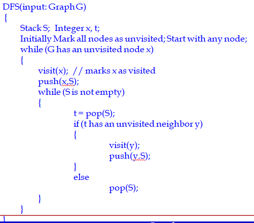

5.1 Graph Terminologies
Definition of Graphs
- A graph G = (V, E) consists of a set of vertices, V, and a set of edges, E.
- Each edge is a pair (v,w), where v,w are vertices. Edges are sometimes referred to as arcs.
- If the pair is ordered, then the graph is directed. Directed graphs are sometimes referred to as digraphs.
5.1.1 Graphs - Terms
- Adjacency : Vertex w is adjacent to v if and only if (v,w)∈E. In an undirected graph with edge (v,w), and hence (w,v), w is adjacent to v and v is adjacent to w.
- Edge Weight : Sometimes an edge has a third component, known as either a weight or a cost.
- Path : A path in a graph is a sequence of vertices w1, w2, w3, . . . , wn such that (wi, wi+1) ∈ E for 1<= i < n. The length of such a path is the number of edges on the path, which is equal to n - 1.
- Loop : An edge from a node to itself (v,v) is called loop.
- Cycle : A cycle in a directed graph is a path of length at least 1 such that w1= wn. A grpah with atleast one cycle is called an acyclic graph.
- Acyclic Graph : Graph with no cycles - (DAG for directed )
Let G be a directed graph
- The in degree of a node x in G is the number of edges coming towards x.
- The out degree of x is the number of edges leaving x.
Let G be an undirected graph
- The degree of a node x is the number of edges that have x as one of their end nodes
- The neighbors of x are the nodes adjacent to x
V={0,1,2,3,4}
E={(0,1), (1,2), (0,3), (3,0), (2,2), (4,3)}
When (x,y) is an edge, we say that x is adjacent to y, and y is adjacent from x.
- 0 is adjacent to 1.
- 1 is not adjacent to 0.
- 2 is adjacent from 1.
Connected Graph : An undirected graph is connected if there is a path from every vertex to every other vertex.
Complete Graph : A graph in which there is an edge between every pair of vertices is called complete graph.
Strongly connected Graph : A directed graph with this connectivity property is called strongly connected.
Weakly connected Graph: If a directed graph is not strongly connected, but the underlying graph (without direction to the arcs) is connected, then the graph is said to be weakly connected.

5.1.2 Graphs Representation
Adjacency matrix representation
Each graph of n nodes is represented by an n x n matrix A, that is, a two-dimensional array A.
- A[i][j] = 1 if (i,j) is an edge
- A[i][j] = 0 if (i,j) is not an edge
Pros:
- Simple to implement
- Easy and fast to tell if a pair (i,j) is an edge by checking if A[i][j] is 1 or 0
Cons:
- No matter how few edges the graph has, the matrix takes O(n2) in memory
Adjacency lists representation
- A graph of n nodes is represented by a one-dimensional array L of linked lists, where L[i] is the linked list containing all the nodes adjacent from node i.
- The nodes in the list L[i] are in no particular order
Pros:
- Saves on space (memory):
- the representation takes as many memory words as there are nodes and edge.
Cons:
- It can take up to O(n) time to determine if a pair of nodes (i,j) is an edge:
- one would have to search the linked list L[i], which takes time proportional to the length of L[i].
5.1.3 Graph Traversals
- Walk through a graph systematically in a predefined order is called as graph traversal.
- That is graph traversal (also known as graph search) refers to the process of visiting (checking and/or updating) each vertex in a graph. Such traversals are classified by the order in which the vertices are visited.
- Types
- Depth-First Search (DFS)
- Breadth-First Search (BFS)
- Topological Sorting
5.1.4 Depth-First Search (DFS)
- Select an unvisited node x, visit it, and treat as the current node
- Find an unvisited neighbor of the current node, visit it, and make it the new current node;
- If the current node has no unvisited neighbors, backtrack to the parent, and make that parent the new current node;
- Repeat steps 3 and 4 until no more nodes can be visited.
- If there are still unvisited nodes, repeat from step 1.
Illustration of DFS
Depth-First Search (DFS) – Pseudo code

Illustration of DFS
5.1.5 Breadth-First Search (BFS)
- Select an unvisited node x, visit it, have it be the root in a BFS tree being formed. Its level is called the current level.
- From each node z in the current level, in the order in which the level nodes were visited, visit all the unvisited neighbors of z.
- The newly visited nodes from this level form a new level that becomes the next current level.
- Repeat step 2 and 3 until no more nodes can be visited.
- If there are still unvisited nodes, repeat from Step 1.
Illustration of BFS
Breadth-First Search (BFS) –Pseudo code
Illustration of BFS
5.1.6 Topological Sorting
- A topological sort is an ordering of vertices in a directed acyclic graph, such that if there is a path from vi to vj, then vj appears after vi in the ordering.
- A topological ordering is not possible if the graph has a cycle, since for two vertices v and w on the cycle, v precedes w and w precedes v.
- A simple algorithm to find a topological ordering is
- First find any vertex with no incoming edges.
- Then print this vertex, and remove it, along with its edges, from the graph.
- Then apply this same strategy to the rest of the graph.
Consider following acyclic graph
In this graph there are more than one Topological orderings
- v1, v2, v5, v4, v3, v7, v6
- v1, v2, v5, v4, v7, v3, v6
Topological Sorting - Pseudo Code